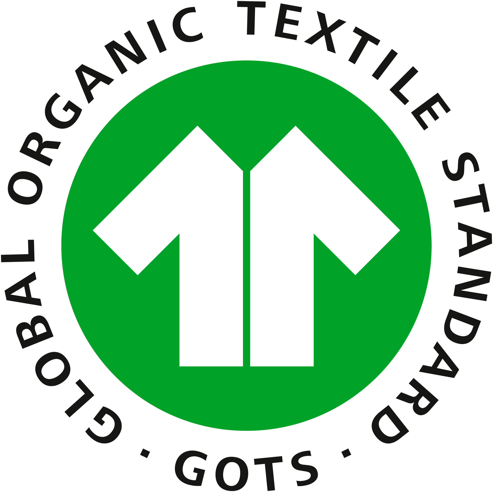
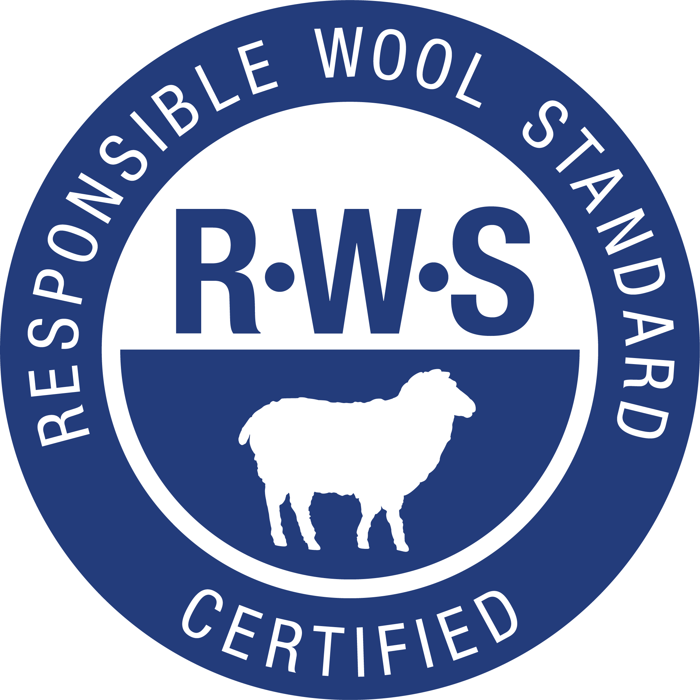

VERIFIED ACCREDITATIONS
Global environmental & quality standards
Our manufacturing facilities and yarn supply chains undergo rigorous independent annual third-party audits.

GOTS Certified
CU 884729 / Organic CottonEnsures organic status of textiles from harvesting of raw materials through environmentally and socially responsible manufacturing.

GRS Certified
Global Recycled StandardVerifies recycled content across cotton, wool and polyester while tracking chemical management and ethical labor standards.
RCS Certified
Recycled Claim StandardProvides third-party chain-of-custody verification of recycled raw materials through every spinning and knitting transition.

RWS Certified
Responsible Wool StandardGuarantees that wool comes from farms with a progressive approach to managing land and animal welfare (strictly non-mulesed).